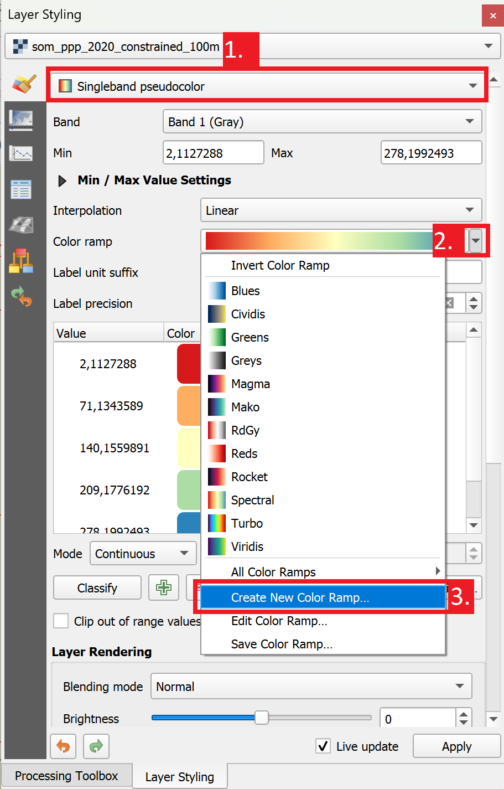
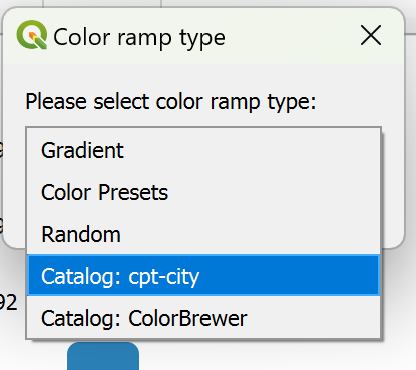
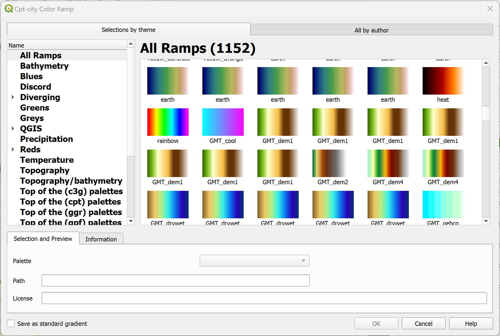

Symbology for Raster Data#
As we have already learned, raster data are basically a grid of pixels with different (numerical) values. As such, you can’t style the shape, fill or outline of raster data. Raster data is visualized by assigning a colour ramp to the pixel value. QGIS offers several options to visualise raster data. For example, you can create a hillshade with digital elevation model (DEM). This small chapter only covers the basics of visualising raster data. If you want to learn more about raster data and how to work with raster layers, take a look at module 8.
Assigning a colour gradient to raster data#
To assign a colour gradient for raster data, you need to:
Open the
styling panelfor the raster layerNavigate to the
Symbology tabBy default, the colour scheme is set to Singleband Gray (if you only have one colour band in the data set). Click on
Singleband Grayand switch toSingleband PseudocolourClick on the arrow to the right of the colour ramp. Here you can choose a pre-made colour ramp
You can modify the colour ramp by clicking on the colour ramp.

Fig. 117 Colour Ramp Selector in QGIS 3.36.#
In the colour ramp selector, you can adjust each colour step. On the bottom, you can see a plot for the Hue, Saturation, Lightness and Opacity. The last three in particular are useful to understand how your colour ramp will appear. Gradients from light to dark are easier to read: Check if the plot for the Lightness has a more or less linear plot.
Inverting the colour ramp#
In some cases, the colour ramp should be inverted to make it easier to read the map:
Click on the arrow next to the Colour ramp to open the dropdown menu.
Click on
Invert Colour Ramp.
Using better colour palettes#
Note
The default colour ramps available in QGIS are limited and do not fit a lot of cartography purposes. However, QGIS includes the cpt-city colour palette catalogue with many carefully crafted colour ramps and palettes. Amongst other, you can find colour ramps specifically created for terrain or elevation models.
{kind=link}

Fig. 118 Accessing the colour catalogue.#
To access the cpt-city catalogue,
Open the raster layers symbology tab and select
Singleband Pseudocoloras the symbolisation method.Navigate to the dropdown arrow next to the colour ramp, a dropdown menu with different colour ramps will open.
Click on
Create New Color Ramp. A small dialogue box will open.
Fig. 119 Selecting the colour ramp catalogue#
A new window will open. Here you can find a multitude of colour palettes. For example, for a digital elevation model you can select a colour ramp for topography or specifically digital elevation models.
{kind=link}
{kind=link}

Fig. 120 The cpt-city colour ramp catalogue in QGIS 3.36#
Tip
The cpt-city colour catalogue also offers colour ramps for other applications such as precipitation, NDVI, or surface temperature.